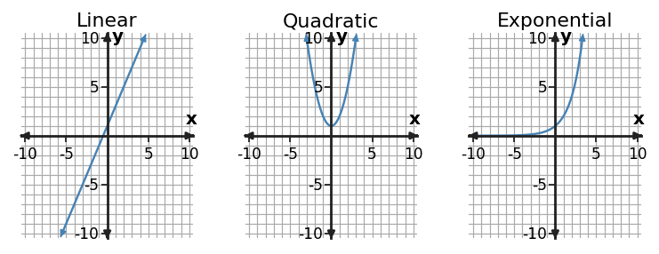

Algebra 1 · Unit 7 · Section 7.4 · Investigation
Function Family Race
Comparing Function Families
Learning Target: Students will compare linear, quadratic, and exponential functions using multiple representations.
Directions
- Work with a partner unless your teacher assigns a different grouping.
- Show the evidence you use, not only the final answer.
- When a representation changes, keep the meaning of the quantities attached to your work.
- Revise an answer if later evidence shows that your first claim was incomplete.
Part 1 · Family Race

Describe how the three graphs differ in shape and long-run behavior.
Part 2 · Change-Pattern Table
| $x$ | Linear $2x+1$ | Quadratic $x^2+1$ | Exponential $2^x$ |
|---|---|---|---|
| 0 | 1 | 1 | 1 |
| 1 | 3 | 2 | 2 |
| 2 | 5 | 5 | 4 |
| 3 | 7 | 10 | 8 |
| 4 | 9 | 17 | 16 |
| 5 |
Part 3 · Evidence Debate
A student says the exponential model is “basically linear” for the first three rows. Use differences/ratios and later outputs to critique the claim.
Synthesis
Complete: linear change is ______; quadratic change has ______; exponential change is ______.